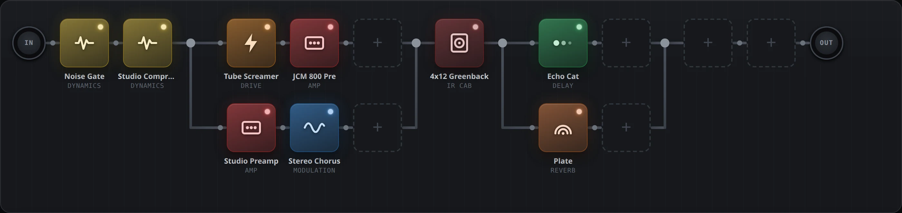
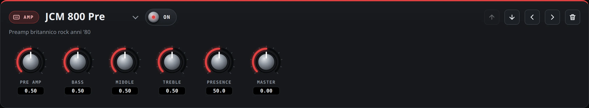
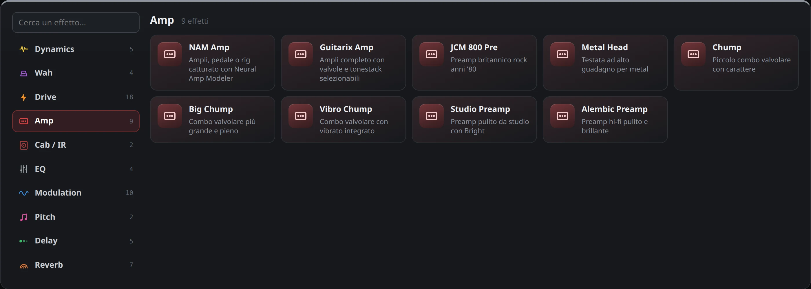

Alice turns a Linux PC or a Raspberry Pi into a Helix-style modeler: neural amp captures, 66 effects, parallel paths and a web interface you can drive from any tablet or phone.

A real Alice rig. Two amps in parallel (driven and clean with chorus), a 4x12 IR cab, then delay and reverb side by side so they stay clear.
Built on proven open-source audio tools, wrapped in an interface that feels like pro hardware.
Load NAM captures of real amps, pedals and full rigs, plus impulse responses for the cab.
Overdrives, fuzzes, wahs, compressors, modulation, delays, reverbs and pitch, from Guitarix, LSP and Dragonfly.
Split the signal into up to six lanes and drag the split and merge nodes anywhere, like on a Fractal.
When one row is not enough, continue the chain on a second row, just like linking the two paths on a Helix.
Browse trending and new community captures and install them with one click, straight into a NAM block.
The interface runs in the browser: tweak your tone from a laptop, a tablet on the music stand or your phone.
Big metal knobs, footswitch-style bypass and a searchable library with a short description for every block.

Drag a knob, use the mouse wheel for fine steps, double-click to reset. Changes are heard instantly.

Ten categories, colour-coded like the blocks in the chain. Type a few letters to find any effect.
Your guitar goes straight into a real-time audio graph. The web interface only sends commands, so it never adds latency.
All you need is Docker. Try it on any PC first, then connect a real audio interface.
git clone https://github.com/teopost/alice
cd aliceWithout an audio interface, Alice runs on a virtual sound card: perfect for building presets.
docker compose up -d --buildGo to http://localhost:8090, or use your computer's address from a tablet on the same network.
http://localhost:8090On Linux or Raspberry Pi, set your interface in docker-compose.hw.yml (for example hw:Stomp) and start with direct hardware access.
docker compose -f docker-compose.yml -f docker-compose.hw.yml up -d --buildAlice is free software. Use it, change it, share your presets.